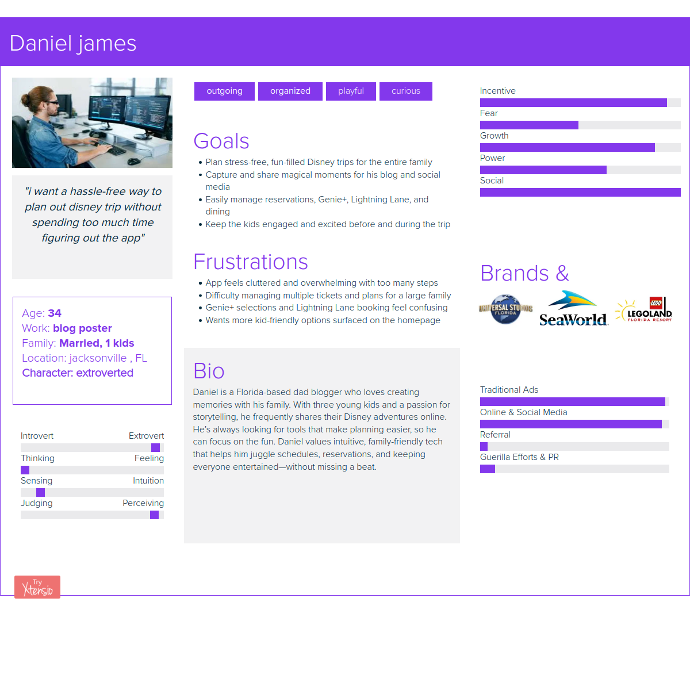
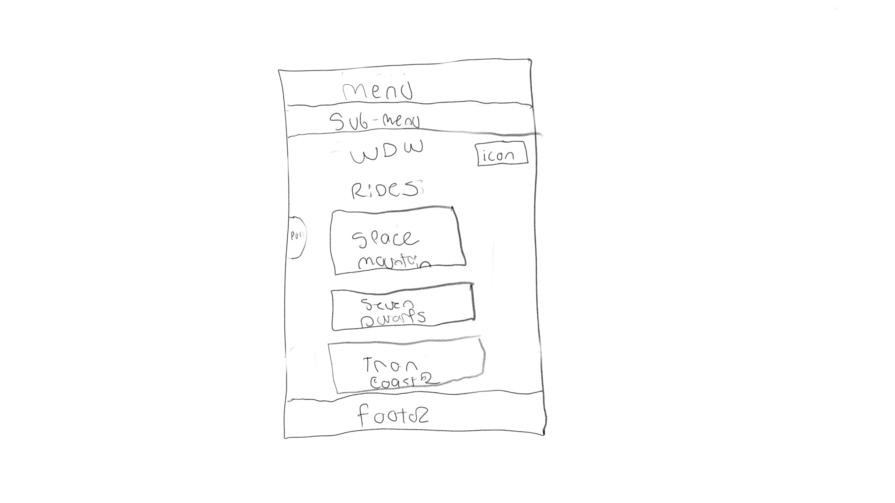

.png)

Project Information
- Category: Mobile Design
- Client: Universal Studios
- Project date: MAR, 2025
My Disney Experience redesign
A redesign of the My disney experience app website.
Case Study:
My Disney Experience App Redesign
Reimagining the Digital Disney Guest Experience
An independent UX/UI redesign exploring how clearer navigation, improved information hierarchy, and a more consistent mobile interface can make planning a Walt Disney World vacation easier and more enjoyable.

Project Overview
- Project Name: My Disney Experience App Redesign
- Project Type: Independent UX/UI Redesign Concept
- Role: UX/UI Designer (Solo Designer)
- Tools Used: Figma, FigJam, Photoshop, Illustrator, Google Drive/Docs, Coolors
- Timeline: 2 Weeks
- Objective: Reimagine the My Disney Experience mobile app with clearer navigation, improved information hierarchy, and a more consistent interface that makes essential vacation-planning features easier to discover and use.
Value Added
This independent redesign explores how a more organized, guest-focused interface could simplify the Walt Disney World planning experience. By emphasizing intuitive navigation, accessible design considerations, and consistent visual components, the concept aims to help guests find important information and navigate key app features with greater confidence.
The Challenge
Problem Statement
The My Disney Experience app serves as a central hub for planning and navigating a Walt Disney World vacation. With features ranging from park maps and attraction information to dining reservations and daily itineraries, guests must navigate a wide range of tools within one mobile experience.
This redesign explores how clearer navigation, improved information hierarchy, and more intuitive interactions could make essential features easier to access.
Identified UX Challenges
- Complex Navigation: The variety of planning tools and park services creates opportunities to simplify feature discovery and help guests locate frequently used functions.
- Information Overload: Attractions, dining, reservations, and park information compete for attention, highlighting the importance of clearer content organization and visual hierarchy.
- Visual Hierarchy: Important actions and supporting information need clear visual distinction so guests can recognize where to focus and what to do next.
- On-the-Go Accessibility: Guests often access the app while walking through busy parks, making readable typography, recognizable icons, and appropriately sized touch targets important design considerations.
Why a Redesign?
- Simplify Trip Planning: Explore a more organized interface that helps guests discover park information, dining options, reservations, and itinerary tools.
- Improve Usability: Refine navigation, content hierarchy, and interface consistency to create clearer pathways between essential app features.
- Preserve Disney's Identity: Balance Disney's immersive storytelling and recognizable visual style with a modern, practical, and accessibility-conscious mobile interface.
Research & Discovery
I explored guest-planning scenarios, information architecture, and opportunities to make important features more accessible. This work helped establish the priorities behind the redesign.
Research Snapshot
Primary User
Daniel James, a 34-year-old married father of one and Jacksonville-based blogger, values organized, stress-free Disney vacations that leave more time for family experiences and storytelling.
Core Problem
Daniel's scenario highlights the challenges of navigating a cluttered app, managing tickets and reservations, and understanding Genie+ and Lightning Lane booking options.
Design Goal
Streamline family vacation planning through clearer reservation pathways, simplified navigation, and more prominent discovery of kid-friendly attractions.
Understanding the User
I used a scenario-based persona to explore the needs of a guest balancing family activities, reservations, and time spent enjoying the parks.
User Persona

Daniel is a fictional, scenario-based persona representing a family-focused Disney guest who values efficient planning and memorable experiences. His goals and frustrations helped guide the redesign's focus on organized reservations, simplified interactions, and family-friendly attraction discovery.
Key Insights
- Planning Complexity: Managing tickets, dining reservations, and daily schedules requires an organized interface that minimizes unnecessary steps.
- Reservation Clarity: Daniel's frustration with Genie+ and Lightning Lane selections highlights the importance of understandable booking options and clear reservation details.
- Family-Friendly Discovery: Daniel wants kid-friendly attractions and activities to be more visible on the homepage rather than buried within multiple screens.
- Time for Family Experiences: As a Disney blogger, Daniel values efficient planning that allows him to focus on enjoying and sharing memorable moments with his family.
Point of View
Daniel James, a married father of one and Disney vacation blogger, needs an intuitive way to organize family plans, manage attraction reservations, and discover kid-friendly experiences because he wants to spend less time navigating complicated app features and more time enjoying and sharing memorable Disney moments.
How Might We?
- Simplify trip planning so families can organize tickets, dining reservations, and daily schedules with fewer unnecessary interactions?
- Clarify attraction reservations by presenting Genie+ and Lightning Lane information through more understandable booking pathways?
- Improve family-friendly discovery by making kid-friendly attractions and experiences more prominent within the homepage?
- Reduce navigation complexity through clearer information hierarchy and intuitive interactions that support guests planning on the go?
Empathy Map
I developed a scenario-based empathy map to explore Daniel's thoughts, expectations, and frustrations while planning and navigating a Disney vacation. The exercise highlighted concerns about complex navigation, unclear booking instructions, difficulty modifying reservations, and keeping track of accurate attraction wait times and dining availability.
It also revealed opportunities for more accessible real-time updates, personalized recommendations, and flexible planning tools. The map represents hypothetical user needs rather than findings from direct interviews.

Affinity Diagram
I used affinity mapping to organize potential improvements into five themes: user experience, booking, real-time information, personalization, and efficiency.
This exercise helped connect Daniel's planning frustrations to actionable design opportunities, including simplified navigation, clearer calls to action, streamlined reservations, and more accessible wait-time information.

Value Proposition Canvas
I developed a Value Proposition Canvas to connect Daniel's vacation-planning goals, frustrations, and expectations with potential improvements to the My Disney Experience app.
The exercise identified three key guest needs: organizing trips efficiently, navigating the parks with confidence, and managing attraction and dining reservations with less friction. I explored simplified booking, clearer pricing and availability, accessible wait times, and improved park navigation.

SWOT Analysis
Strengths
- Recognizable Brand: Disney's storytelling and established visual identity create a familiar foundation for the guest experience.
- Integrated Planning Tools: Park maps, attraction information, dining reservations, and itinerary features support multiple vacation-planning needs within one app.
- Real-Time Information: Attraction wait times and park updates provide useful information for guests making decisions throughout their visit.
Weaknesses
- Navigation Complexity: The wide range of app features creates opportunities to simplify menus and make essential planning tools more discoverable.
- Reservation Clarity: Daniel's scenario highlights potential confusion when managing attraction bookings, tickets, and dining reservations.
- Content Prioritization: Family-friendly attractions and frequently used planning features may benefit from greater visibility and clearer organization.
Opportunities
- Family-Focused Discovery: Highlight kid-friendly attractions and activities through clearer homepage content and navigation categories.
- Simplified Planning: Explore more organized reservation details, daily schedules, and understandable booking pathways.
- Personalized Experiences: Consider recommendations and planning tools based on family interests, preferences, and vacation activities.
Threats
- Alternative Planning Resources: Third-party vacation guides, crowd calendars, and planning apps offer guests additional ways to organize their trips.
- Changing Park Conditions: Attraction availability, reservation policies, and operational changes can affect guests' plans and information needs.
- Different Digital Comfort Levels: Guests with varying technical experience may find complex planning interactions difficult to navigate.
Competitive Analysis & Takeaways
I examined other theme park digital experiences to consider how attraction discovery, ticketing, and guest services could inform the My Disney Experience redesign.
- Universal — Immersive Experiences: Universal's entertainment-focused digital ecosystem highlights the importance of balancing branded experiences with accessible park information and planning tools.
- Six Flags — Tickets & Passes: Its emphasis on admission products and seasonal offerings reinforces the need to distinguish purchasing options from essential in-park planning features.
- SeaWorld — Guest Convenience: Ticketing, attraction information, and optional experiences demonstrate the value of organizing services around recognizable guest activities.
- LEGOLAND — Family-Focused Discovery: Its emphasis on family attractions and themed experiences highlights opportunities to make kid-friendly activities more prominent and easier to explore.
Card Sorting & Information Architecture
I created a card-sorting exercise to explore a clearer information architecture for the My Disney Experience app. I organized features into seven primary categories: Map, Attractions, Store, Food, Tickets, Lightning Lane, and Profile.
Related content was grouped by guest task, including park-specific attractions and dining, ticket types, reservation options, and account information. This structure helped me explore more predictable navigation pathways.
.png)
The Biggest Design Challenge
- Simplify Without Removing Functionality: Organize Disney's extensive planning features into intuitive navigation pathways while preserving access to tickets, attractions, dining, and reservations.
- Prioritize Family Planning: Make essential park information, attraction booking options, and kid-friendly experiences easier to discover for guests like Daniel who manage family schedules on the go.
- Balance Magic and Usability: Strengthen visual hierarchy, typography, spacing, and calls to action while maintaining Disney's immersive storytelling and recognizable brand identity.
Guest Experience Considerations
- Navigation & Information Overload: Daniel's scenario highlights how complex screens and scattered information can make it difficult to locate essential planning tools.
- Reservation Flexibility: Guests may need to adjust attraction and dining reservations when plans change, creating opportunities for clearer instructions and more understandable booking workflows.
- Real-Time Information & Confidence: Accessible wait times, attraction updates, and dining availability can help guests make informed decisions and adapt their plans throughout the day.
From Research to Interface Design
The design process translated guest-planning scenarios and information architecture exercises into wireframes, interface components, and high-fidelity mobile screens.
My Design Process
- Research & Analysis: Reviewed guest experience challenges and developed a persona, empathy map, SWOT analysis, and value proposition canvas to identify planning and navigation priorities.
- Information Architecture: Used card sorting and an affinity diagram to organize features around essential guest tasks, including attractions, dining, tickets, and reservations.
- Wireframing & Iteration: Restructured navigation, simplified content layouts, and refined user flows to make frequently used features easier to discover.
- High-Fidelity Design: Applied a cohesive visual system with Inter typography, consistent components, clearer calls to action, and mobile-focused layouts across the redesigned screens.
Visual Direction & UI Style Guide
I developed a refined visual system to balance Disney's playful identity with a cleaner, more intuitive mobile experience. The updated palette combines Disney-inspired blues, deep navy, and soft neutrals to establish visual hierarchy, while Inter typography improves consistency and readability.
Standardized icons and button states create a cohesive interface across the redesigned screens, supporting clearer navigation and more recognizable interactions.

Wireframes & Design Evolution
The interface developed from rough sketches to low-fidelity wireframes and refined high-fidelity screens. Each stage helped explore clearer navigation, content organization, and essential guest interactions.
Early Sketches
I began with rough hand sketches to quickly visualize potential layouts and prioritize key guest actions like ride wait times, mobile food ordering, and park maps. This low-stakes step let me experiment with ideas before jumping into wireframes.
.png)

Low-Fidelity Wireframes
I developed low-fidelity wireframes to explore navigation, content hierarchy, and essential guest interactions before refining the visual design.
The homepage prioritizes quick access to park maps, wait times, attractions, dining, tickets, and daily plans, while the attractions screen introduces filtering, wait-time information, and Lightning Lane options.


High-Fidelity Interface Design
Building on my low-fidelity wireframes, I refined the homepage and attractions screens using a consistent visual system, clearer content hierarchy, and reusable mobile components.
The homepage emphasizes essential planning tools through a quick-access grid, prominent calls to action, and organized featured experiences. The attractions screen introduces structured filters, scannable ride information, visible wait times, and dedicated Lightning Lane actions.

.png)
Key Design Decisions
The redesign focused on improving how guests discover important planning tools and understand their options while navigating the mobile app.
- Prioritized Essential Planning Tools: The homepage emphasizes quick access to maps, attractions, dining, tickets, and daily plans so guests can more easily identify relevant actions.
- Improved Attraction Discovery: Structured filters, attraction cards, and visible wait-time information make the attractions screen easier to scan.
- Clarified Reservation Actions: Dedicated Lightning Lane actions and more consistent interface labels aim to make reservation options easier to recognize.
- Established Visual Consistency: Inter typography, standardized icons, button states, and reusable components create a more cohesive interface across screens.
- Balanced Disney Storytelling with Usability: The visual direction preserves a Disney-inspired identity while emphasizing readability, clear navigation, and practical guest tasks.
Design Iterations
My initial designs explored the placement of essential planning features, attraction information, and navigation elements. Through iteration, I refined these layouts to address visual clutter, inconsistent hierarchy, and competing interface elements.
First Iteration vs. Final Iteration


Before & After: What Changed?
Comparing the initial concepts with the refined screens highlights how the redesign evolved toward clearer information organization and a more consistent mobile interface.
- Before — Homepage: Early layouts explored promotional content and navigation placement.
- After — Homepage: Quick-access planning tools, organized content cards, and consistent navigation receive greater emphasis.
- Before — Attractions: Initial layouts introduced basic filters, attraction information, and reservation options.
- After — Attractions: Structured filters, scannable ride cards, visible wait times, and dedicated Lightning Lane actions create a clearer information hierarchy.
Explore the Interactive Prototype
The Figma prototype brings the redesigned mobile screens together and allows visitors to explore the proposed interface and interactions.
Open Interactive Figma Prototype
This is an independent design prototype, not a live Disney reservation or booking system.
Design Outcomes & Intended Impact
The redesign proposes improvements to information organization, family-focused discovery, and reservation clarity. These describe design intentions, not measured results from usability testing.
Organized Trip Planning
Prioritizes tickets, dining reservations, and daily schedules within a clearer information structure to support family planning.
Family-Friendly Discovery
Emphasizes kid-friendly attractions and experiences through more recognizable content categories and homepage priorities.
Clearer Booking Pathways
Explores more understandable attraction reservation options, consistent action labels, and clearer booking information.
Reflection & What I Learned
This project strengthened my understanding of how a feature-rich mobile application can be reorganized around user priorities without sacrificing its recognizable visual identity.
- Prioritizing User Needs Over Feature Quantity: Redesigning a feature-rich application taught me to prioritize essential guest tasks, including attraction discovery, wait times, reservations, and dining, through clearer navigation and stronger information hierarchy.
- Turning Research into Design Decisions: Scenario-based personas, empathy mapping, affinity diagramming, competitive analysis, and guest feedback helped me identify recurring planning challenges and translate them into focused design priorities. These methods provided direction while highlighting the need for future user validation.
- Iteration Strengthens the User Experience: Moving from early concepts and low-fidelity wireframes to refined interfaces demonstrated how thoughtful adjustments to spacing, content organization, filtering, and calls to action can improve the clarity of complex screens.
- Building a Consistent Visual System: Establishing a cohesive design language through Inter typography, a refined Disney-inspired color palette, reusable cards, and consistent button styles helped balance immersive branding with practical usability.
- Designing for Real-World Guest Needs: Organizing wait times, Lightning Lane options, and planning tools around guests' immediate needs reinforced the importance of accessible information, understandable actions, and flexibility during a busy park visit.
Next Steps
Potential next steps include usability testing with representative guests, evaluating the clarity of reservation pathways, reviewing accessibility, and refining the prototype based on feedback.
The central lesson from this project is that a memorable digital experience should make essential guest tasks feel intuitive while preserving the character of the destination.
Independent, unofficial UX/UI redesign concept by Rojas Design Studios. Not affiliated with, commissioned by, or endorsed by The Walt Disney Company.